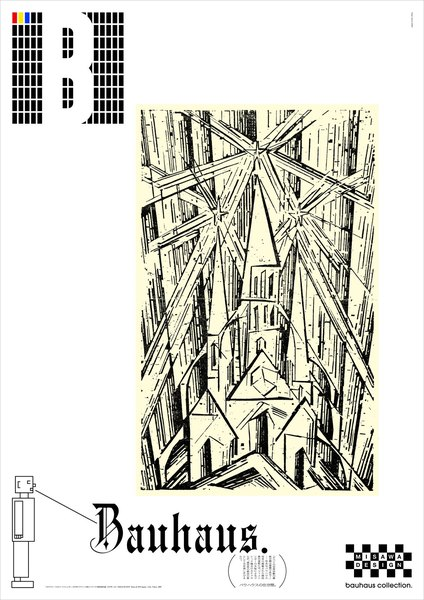
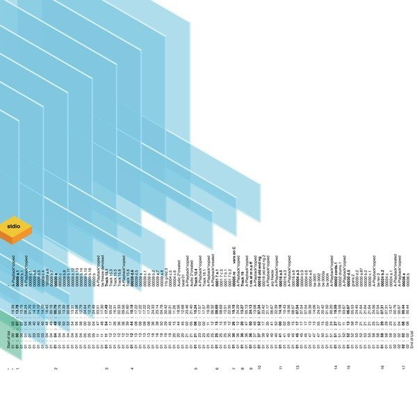
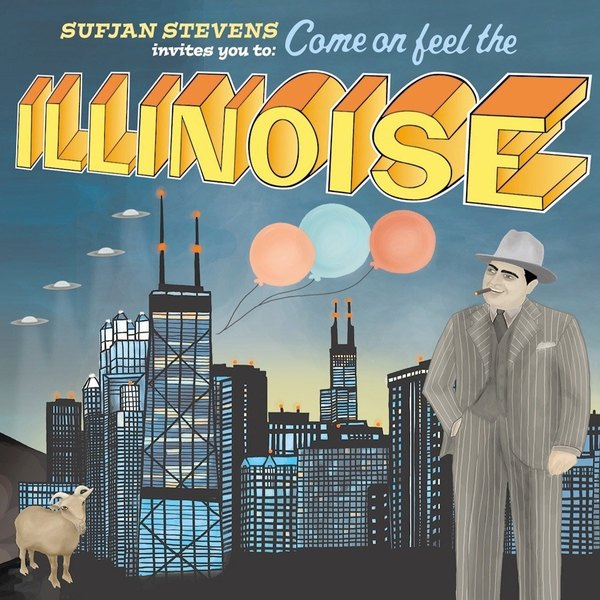

CRVI000318Tosca - Suzuki
Designer unknown · G-Stone · 2000
Designer unknown · G-Stone · 2000

CRVI000250Belleruche - Turntable Soul Music
Designer unknown · Tru Thoughts · 2007
Designer unknown · Tru Thoughts · 2007

CRVI000223The Five Corners Quintet - Hot Corner
Designer unknown · Ricky-Tick · 2008
Designer unknown · Ricky-Tick · 2008

CRVI000380Basil Kirchin - Quantum
Designer unknown · Trunk · 2003
Designer unknown · Trunk · 2003

CRVI000267Unforscene - Fingers And Thumbs
Designer unknown · Tru Thoughts · 2008
Designer unknown · Tru Thoughts · 2008

CRVI000390Fennesz - Endless Summer
Designer unknown · 2001
Designer unknown · 2001

CRVI000031Telefon Tel Aviv - Map of What Is Effortless
Designed by Joshua Eustis, Charles Cooper · Hefty Records · 2004
Designed by Joshua Eustis, Charles Cooper · Hefty Records · 2004

CRVI000243Isoul8 - Balance
Designer unknown · Sonar Kollektiv · 2008
Designer unknown · Sonar Kollektiv · 2008

CRVI000436Panda Bear - Person Pitch
Designer unknown · Paw Tracks · 2007
Designer unknown · Paw Tracks · 2007

CRVI000431Camera Obscura - Underachievers Please Try Harder
Designer unknown · Elefant Records · 2003
Designer unknown · Elefant Records · 2003

CRVI000378Thai Elephant Orchestra /Dave Soldier / Richard Lair - Elephonic Rhapsodies
Designer unknown · Mulatta · 2005
Designer unknown · Mulatta · 2005

CRVI000268Lack of Afro - Press On
Designer unknown · Freestyle · 2007
Designer unknown · Freestyle · 2007

CRVI000216Izuru Utsumi - Utsumi
Designer unknown · Flower · 2002
Designer unknown · Flower · 2002

CRVI000244Matthias Vogt Trio - Changing Colours
Designer unknown · INFRACom! · 2006
Designer unknown · INFRACom! · 2006

CRVI000322Skream - Skream!
Designer unknown · Tempa · 2006
Designer unknown · Tempa · 2006

CRVI000109Katsumi Asaba - Bauhaus.
Misawa Design, bauhaus collection · after Lyonel Feininger's woodcut 'Cathedral', 1919 · 2009
Misawa Design, bauhaus collection · after Lyonel Feininger's woodcut 'Cathedral', 1919 · 2009

CRVI000088Matmos - Supreme Balloon
Designer unknown · Matador · 2008
Designer unknown · Matador · 2008

CRVI000056The Other People Place - Lifestyles Of The Laptop Café
Designed by The Designers Republic · 2001
Designed by The Designers Republic · 2001

CRVI000379Quintron - The Frog Tape
Designer unknown · Skin Graft · 2005
Designer unknown · Skin Graft · 2005

CRVI000437Real Estate - Real Estate
Designer unknown · Woodsist · 2009
Designer unknown · Woodsist · 2009

CRVI000238Troubleman - Time Out Of Mind
Designer unknown · Far Out Recordings · 2004
Designer unknown · Far Out Recordings · 2004

CRVI000003Thomas Fehlmann - Visions Of Blah
Designed by Bianca Strauch · Kompakt · 2002
Designed by Bianca Strauch · Kompakt · 2002

CRVI000271Robert Czerniawski - Lulu on the Bridge
Theatre Poster · 2008 · 2008
Theatre Poster · 2008 · 2008

CRVI000389SND - Stdio
Designer unknown · Mille Plateaux · 2000
Designer unknown · Mille Plateaux · 2000

CRVI000325Lone - Ecstasy & Friends
Designer unknown · Werk Discs · 2009
Designer unknown · Werk Discs · 2009

CRVI000435Sufjan Stevens - Illinois
Designer unknown · Asthmatic Kitty · 2005
Designer unknown · Asthmatic Kitty · 2005

CRVI000230Me&You - Floating Heavy
Designer unknown · Tru Thoughts · 2007
Designer unknown · Tru Thoughts · 2007

CRVI000317Farben - Textstar
Designer unknown · Klang Elektronik · 2002
Designer unknown · Klang Elektronik · 2002

CRVI000404Los Updates - Los Updates First If You Please
Designer unknown · 2008
Designer unknown · 2008

CRVI000245TM Juke - Forward
Designer unknown · Tru Thoughts · 2006
Designer unknown · Tru Thoughts · 2006

CRVI000401PAUL RANDOLPH - This Is What It Is
Designer unknown · Mahogani Music · 2004
Designer unknown · Mahogani Music · 2004

CRVI000320Villalobos - Fizheuer Zieheuer
Designer unknown · Playhouse · 2006
Designer unknown · Playhouse · 2006

CRVI000375Sharon Jones & The Dap-Kings - Dap Dippin' with Sharon Jones and the Dap-Kings
Designer unknown · Daptone · 2002
Designer unknown · Daptone · 2002

CRVI000251Wiesław Wałkuski - Scruple
Film Poster Designed By Wiesław Wałkuski · 2000 · 2000
Film Poster Designed By Wiesław Wałkuski · 2000 · 2000

CRVI000434Feist - The Reminder (Deluxe Version)
Designer unknown · Polydor · 2007
Designer unknown · Polydor · 2007

CRVI000224SOIL & "PIMP" SESSIONS - Pimp Of The Year
Designer unknown · Victor · 2006
Designer unknown · Victor · 2006

CRVI000321Loscil - Plume
Designer unknown · Kranky · 2006
Designer unknown · Kranky · 2006

CRVI000025Gesellschaft Zur Emanzipation Des Samples - Circulations
Designed by Jens Reitemeyer · Faitiche · 2009
Designed by Jens Reitemeyer · Faitiche · 2009